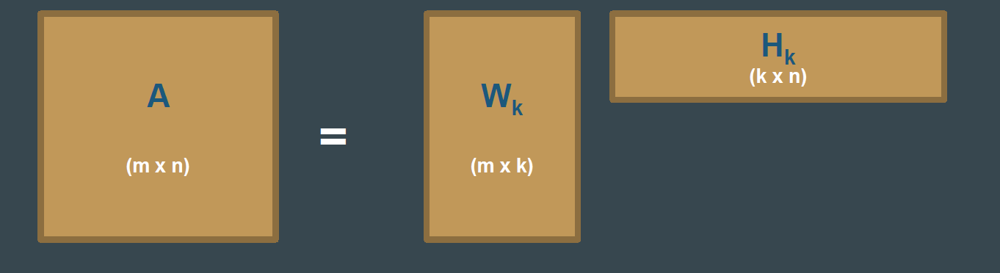

14.2 NMF Topic Modeling
Non-negative factors as an additive topic model.
1. Topics that only add
Non-negative matrix factorization (NMF) splits a non-negative matrix ({\bf A}) (counts or TF–IDF) into two non-negative factors:
[ {\bf A} \approx {\bf W}{\bf H}. ]
No minus signs. A document is an additive mix of parts. That matches how people talk about topics: this article is some sports plus some politics, not sports minus politics.
- ({\bf W}): basis. Each column is a topic as a non-negative combination of terms (sports, science, politics as atomic parts).
- ({\bf H}): codes. Each column says how to mix those parts to rebuild one document (30% sports, 50% science, 20% politics).

If ({\bf A}) is (m) terms by (n) documents and you ask for (k) topics, ({\bf W}) is (m \times k) and ({\bf H}) is (k \times n). Same cartoon as SVD and LDA, different constraints.
2. How it is fit
NMF is an optimization loop, not a generative story.
- Initialize ({\bf W}) and ({\bf H}) with non-negative values (random, nndsvd, or a warm start).
- Alternate. Fix ({\bf H}), update ({\bf W}) to reduce (|{\bf A}-{\bf WH}|) without going negative. Then fix ({\bf W}) and update ({\bf H}). Gradient steps or multiplicative updates are the usual engines.
- Stop when the reconstruction error flattens or you hit a max iteration count.
- Read columns of ({\bf W}) as topics and columns of ({\bf H}) as document mixes.
Because the objective is not convex in both factors at once, two random starts can give two different topic lists. Run more than once.
3. Why NMF is popular for text
| Property | Why it helps |
|---|---|
| Non-negativity | Top words are "this topic uses these terms," not a signed loading |
| Parts-based | Topics look like additive ingredients, including subtopics |
| Often sparse | A document uses a few columns of ({\bf W}), not all (k) |
| Broad use | Same idea on images and gene-expression; one mental model |
NMF topics are often easier to name than SVD topics and cheaper to train than a careful LDA sweep. It is a fair default when you want a factorization and you do not need a probability model.
4. What goes wrong
| Limitation | Practice |
|---|---|
| Columns of ({\bf W}) are not orthogonal | Topics overlap. That can be honest (a "finance" and "politics" share tax) or mush |
| You still choose (k) | Same problem as LDA and truncated SVD |
| Sensitive to init | Several restarts; keep the run with the best error and the most readable words |
| Cost | Wide TF–IDF and large (k) are slow |
| Local minima | Restarts again |
| No negative association | You will not get "this topic is the opposite of that word" |
Do not pick NMF because a slide said "disadvantages of SVD." Pick it when you want additive, non-negative parts. Use SVD when you want a stable orthogonal basis and can live with signs. Use LDA when you want a generative mix and held-out likelihood.
scikit-learn's NMF on a TF–IDF matrix is the usual first implementation. Look at reconstruction_err_ and the top terms of each component. If two components share eight of their ten words, raise the stop list or lower (k), do not add epochs.
5. NMF next to SVD and LDA
| SVD / LSA | NMF | LDA | |
|---|---|---|---|
| Signs | Can be negative | Non-negative | Probabilities |
| Story | Linear algebra | Additive parts | Generative mix |
| Typical input | Centered or TF–IDF | Non-negative TF–IDF / counts | Counts |
| Stability | High | Init-sensitive | Seed-sensitive |
Same picture of "terms × topics × documents." Different promises to the reader.
6. Practice
-
After NMF, how do you write a one-line name for topic (j)? Which matrix do you sort?
-
Two runs with (k=15) give different top words. What do you change before you change (k)?
-
A client asks for "topics that are completely distinct." Why might NMF disappoint them, and what would you try instead or in addition?